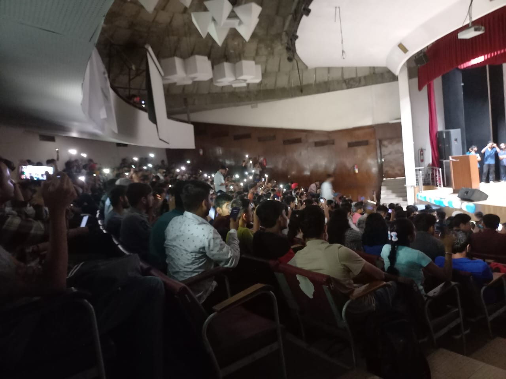
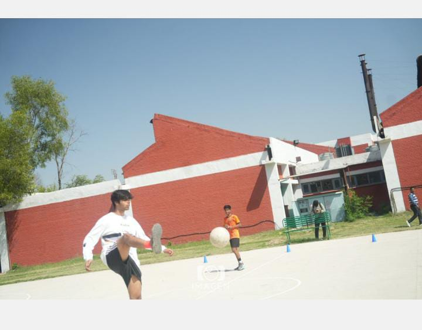
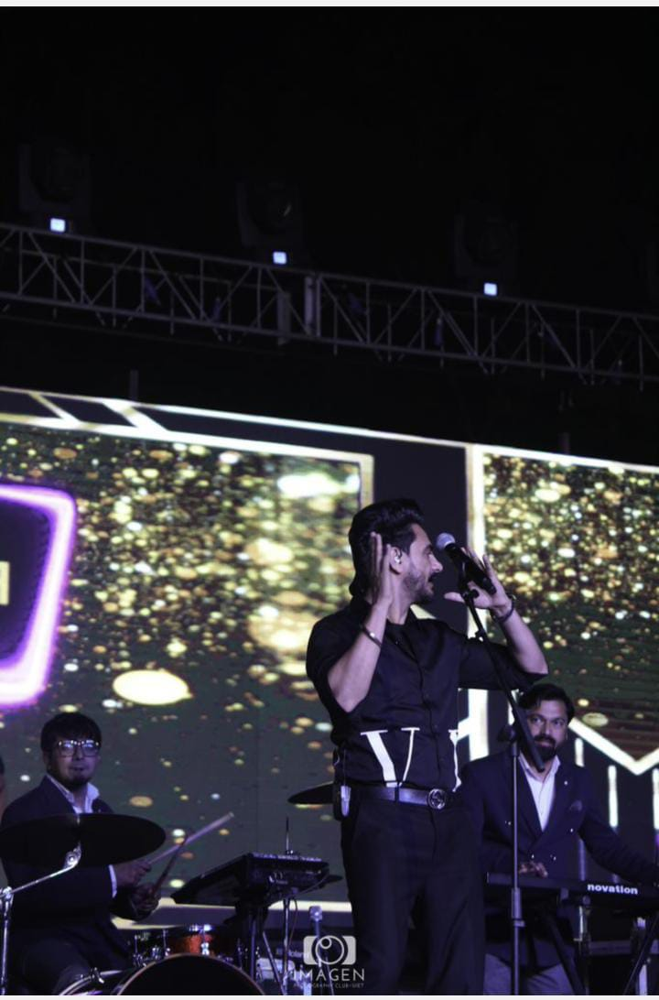
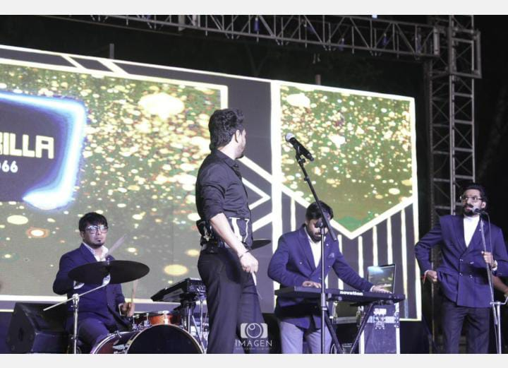
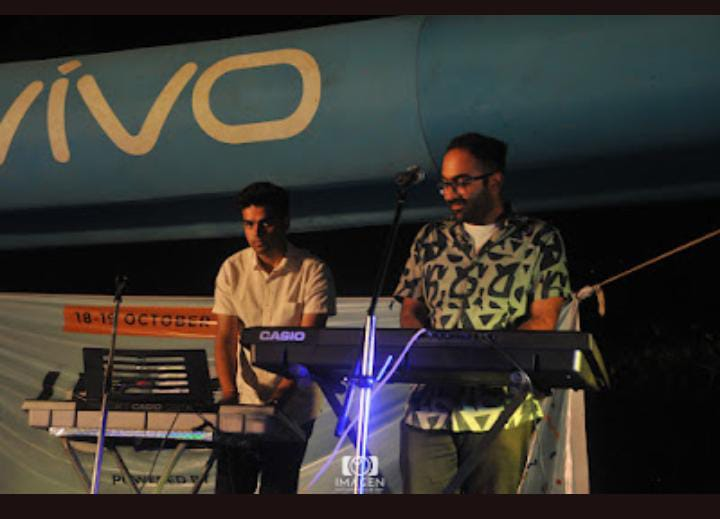
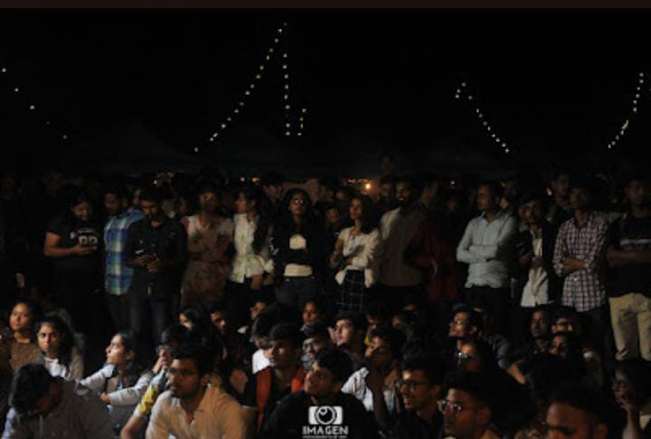
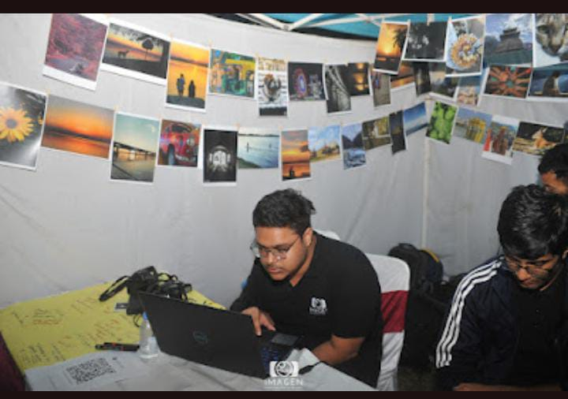
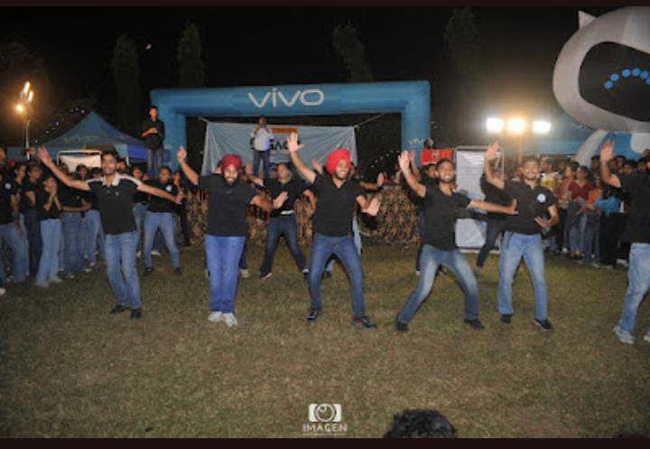

GOONJ
Goonj is the annual techno-cultural fest of University Institute Of Engineering And Technology , organised by students of the college under the faculty guidance every year.The spirit of the fest is to promote the cultural as well as the technical alacrity among the students . Moreover , the moto is to spread the zeal among students releiving them from the stressful schedule of an engineering atmosphere
The fest includes a lot of cultural activities like sining , dancing , peotry acting along with the technical comeptitions like hackathons







